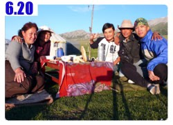
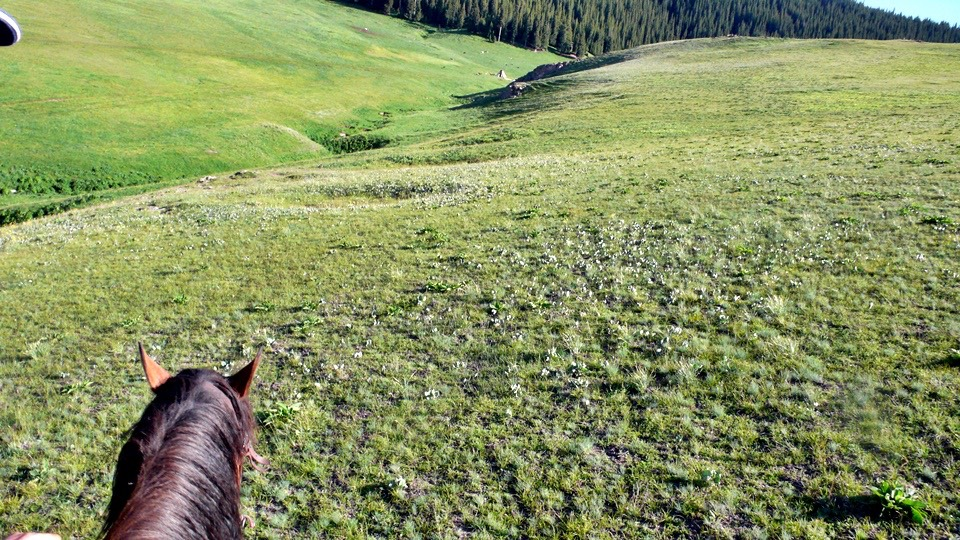
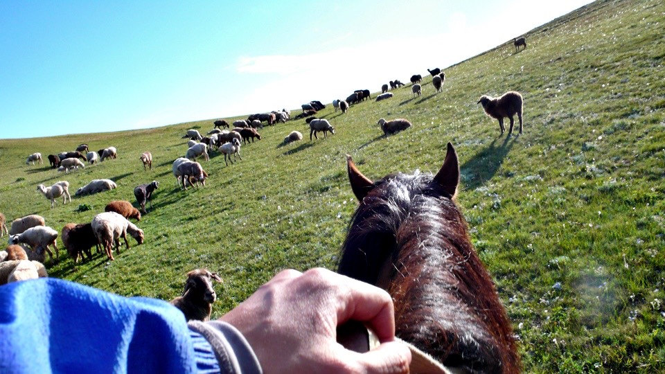
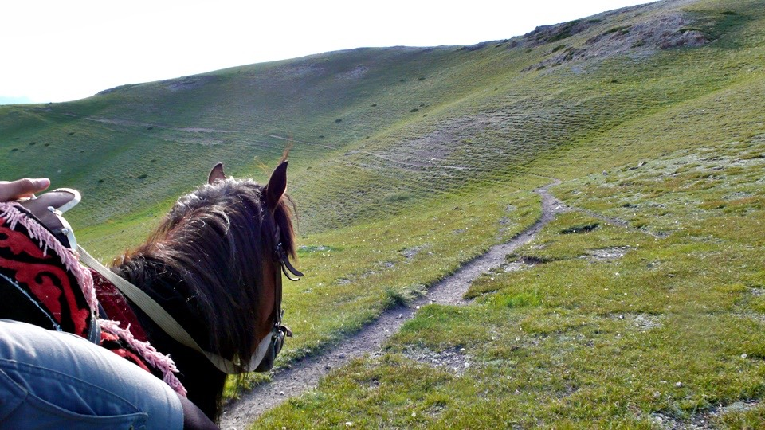
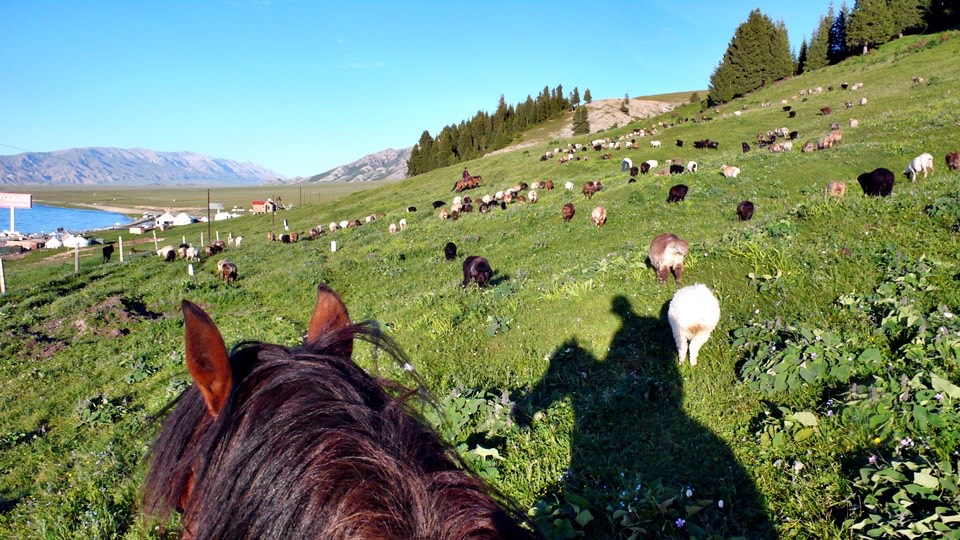
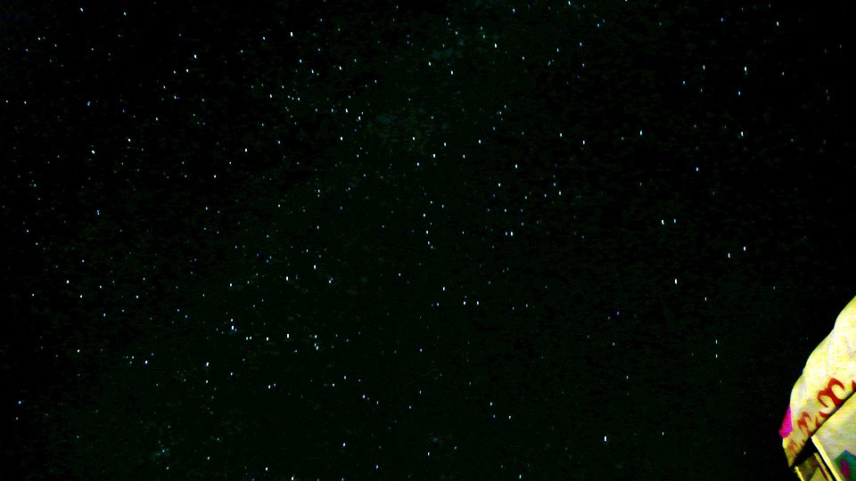

一早趁著天氣涼快，從四台出發，涼快歸涼快，但是早上吹的是逆風，再配上大陡坡，真是令人難以招架。
可也沒有像每個人跟我說的那樣『肯定騎不動，得牽車才爬的上去。』，事實上慢慢的騎，還是有辦法爬的上去的。
從七點半出發，一直騎到中午十一點半，總計四個小時，我終於騎完了二十二公里的上坡路，再度打破騎車速度最慢的紀錄。
早上陪伴著我的只有牧羊人和很多很多的羊，已經越來越習慣這樣的光景，在這邊看到這樣的景色，就跟看到一輛卡車開過去那樣的普遍。
牧民的口哨都吹得很響亮，幾公里外就能聽的見，可愛的羊咩咩和牧民騎在馬上的帥勁，還是每次都讓我忍不住拿出相機多拍幾張。
『連續上坡』的牌子一直出現，從一開始的十九公里、然後變成十六公里、接著是九公里，感覺已經騎了很遠，可是上坡路還是那麼漫長。
遠遠的我又看見前方有一個連續上坡的牌子，右下角的字比較小，看不清楚還剩下幾公里的上坡。
等騎近一點才看見，那個小字不是公里數，而是『結束』！
多麼可愛的告示牌呀～連結束都標示出來了，真是讓人看了就鬆一口氣，心中大喜，很想把這個告示牌拿回家當紀念。
雖然出現上坡結束的牌子，但其實接下來還是上坡路，但是騎起來就覺得心裡爽很多，比看到『連續下坡』的告示牌還要爽。
從結束的牌子再騎三公里，終於爬到山頂，今天從四台出發，直到這邊，又爬升了一千公尺海拔。
早餐什麼也沒吃，今天維持體力的食物就是被太陽熱到溶解，晚上又冷到凝固的巧克力，這一塊的災情比較沒那麼嚴重，還看的出原本的形狀。
山頂往前再騎幾百公尺，看到了小小的房子，放了很多大輪胎，用噴漆寫著商店兩個大字。
在這樣的鬼地方真的會有商店嗎？該不會已經倒閉只剩下空屋了吧？
繞到門口去看，真的還有在營業，老闆在幫卡車換輪胎，老闆娘則顧店，店裡的東西還真是齊全，但我目前需要的只有一瓶可樂。
喝著冰涼的可樂，宛如新生，急速的滑下斜坡，從這裡離賽里木湖就不遠了。
路旁都是草原，雖不到一望無際的地步，可是也很壯觀，草原中有億萬隻的蝗蟲在鳴叫，唧唧唧唧的叫個不停。
不光是在草原裡面，連在柏油路上都佈滿了數不清的蝗蟲，一騎經過，蝗蟲們全部都跳起來閃開。
好幾隻就跳到小多身上，沿著包包爬來爬去，用彈指神功一隻一隻拍走。
通過這個奇怪的牌坊之後就是賽里木湖，這邊有收票亭，但是騎進去他沒跟我收錢。
這是應該的，賽里木湖極大，沿著312國道將近十多公里都是湖景，誰要花錢看湖呢？
往湖區的路鋪的很好，湖岸邊的草原很像薩爾達傳說裡的海拉爾平原，前面那個賽里木湖就是海拉爾湖。
湖上剛好也有一個小島蓋了幾座房子，想必就是索拉族人的家 ^^"
草原上奔馳著很多隻愛波娜，這景色真是太美好了～
雖然我不是林克，我的坐騎是單車，背上也沒有一把劍，可我已經心醉神迷在此。
和賽里木湖相比，天池真的如小金導遊所說的，很小。
賽里木湖不知道有幾個台北市那麼大，從任何一邊看都看不到湖的盡頭，燦藍的湖水，飄著淡淡的鹹味，這裡是鹹水湖。
越過柵欄，我真的把小多騎到湖邊了，讓你也泡泡看冰涼的湖水是什麼感覺=..=
這邊有一道石頭堤防，分隔出了大湖和一個半月型的小湖，我沿著半月型的湖邊走，想著要怎麼樣才能跨過堤防到大湖那邊去。
湖邊的水草很豐盛，有許多蝴蝶在飛舞，比蝴蝶還多隻的就是超大隻的蚊子(還好我穿長袖)，
比蚊子還多隻的就是蝗蟲，每走一步路就會驚動幾十隻的蝗蟲跳出來，
比蝗蟲還多的就是瓢蟲，任何地方，包括湖岸邊都可以看見瓢蟲。
走了幾公里，發現這堤防是無限綿延的，所以就找一段水看起來比較淺，兩邊的距離也比較近的地方，脫下鞋子跨到對面去。
一腳踩進湖水裡，腳馬上就被水草的奇異觸感弄得渾身發癢，腳底踩的是爛泥巴，整個人瞬間就往下陷三十公分。
賽里木湖的水一定要泡一下的啦，湖水無比的清澈，也是凍的叫人受不了。
湖水拍打岸邊不算太波濤洶湧，也許是風颳得沒那麼大的緣故，湖面上漣漪一層一層輻射般的暈開來，不說這是湖，任誰都會覺得這是海洋。
開心的泡完腳之後，每次都要想辦法把腳弄乾才有辦法穿襪子和鞋子，不然會變成臭腳丫。
這次就站在草坪上面讓小草把水給吸乾。
離開這半月型的湖區，騎著小多繼續往前走，一整條都是沿著湖岸開設的路，若說世間有什麼美景不可錯過，那賽里木湖這輩子一定要來一次。
湖區雖然很大，但是沿著湖區的旅遊觀光區則不多，大多都還在施工當中，或是看起來已經因為生意做不起來而凋零掉的樣子。
這條路雖然景色很美，但是沿路都在施工，路況不是很好，要一邊看湖景一邊騎車真是有一點危險，可是眼光老是會被湖給吸引走，
直到騎到坑洞震了一下才把注意力又拉回路面上。
沿著湖是平路混著下坡，又是順風，和早上騎車的樣子簡直是完全兩樣情，輕輕鬆鬆的騎了一段路，看到山腳下搭了好多帳篷、蒙古包。
這邊是很特殊的地方，不同於一般的高樓大廈型旅館，而是草原帳篷林立的民俗觀光場所，這裡是蒙古某個族的自治區，
可是在這裡不論是放牧的或是搭帳篷做觀光生意的，九成都是哈薩克人居多。
當我停下來拍張照的時候，就被在路邊攬客的人招呼，問我要不要吃飯？
一盤抓飯十塊錢，有點貴，但這邊是觀光區，也是沒辦法的事情，本來想說如果可以吃個飯順便參觀一下蒙古包也不錯。
而且肚子裡只有可樂和巧克力，實在是餓的可以，所以就跟著這個小姐往帳棚區走去。
小多靠著帳棚放，馬上就跑出一個年輕人，『哇～這太陽眼鏡真好看！』說完就拿起來戴。

這個好像跟我很熟的人，叫做『阿展瑪』，是哈薩克人，今年十八歲，他跟他的家人一整個夏天一直到十月份都在湖邊營生。
剛剛從路邊把我招呼近來的是阿展瑪的姐姐，叫做蒂娜，蒂娜是家裡五個小孩當中最大的。
第二大的也是女兒，晚一點才會遇到，排行老三則是阿展瑪，再來是阿展瑪的弟弟，名字很難念，太多音節，阿展瑪說叫他『綠茶』就可以了。
最小的老五則還在哈薩克準備考試，沒有到湖邊來幫忙做生意。
照片裡由右至左分別是阿展瑪、綠茶和蒂娜。
除了做遊客生意之外，他們家也自己做一些酸奶或是油酥等奶製品，自己吃或是賣人都可以。
剛點完抓飯，正等著吃的時候，哈展瑪跟綠茶就問我要不要騎馬？一小時三十元。
馬都是兩兄弟自個花錢買的，所以雖然是一家人，但是騎誰的馬錢就落入誰的口袋，家族競爭還算激烈。
我說我想先吃飯，等我吃飽再說吧。
當我做在陰涼處休息的時候，被其它到這邊玩的客人招待到帳棚裡大吃大喝。
看到我騎著自行車，所有人對我都很友善，這一群客人八個人，玩得很豪華，帳篷裡面各式各樣的餐點、馬奶酒、烤肉、新疆名酒、哈密瓜、羊肉。
簡直是酋長在宴客的規模，因為我的抓飯還沒煮好，就給人家請客大吃一頓，吃到八分飽之後我的抓飯才送來，吃完抓飯整個人就是撐>"<

癱在帳棚底下的陰涼處休息，跟阿展瑪學幾句實用的哈薩克話，你好、謝謝、再見、多少錢、便宜點，五句話應該就夠用了:D
遊覽車將客人一車一車的載到這裡來，因為吃的太飽了騎不動馬，跟阿展瑪說我休息一個小時先。

阿展瑪就騎著馬去湖邊做點觀光客的生意，騎馬拍照，一張十元，真是超好賺的。
這樣算起來，騎一個小時的馬只要三十元還算很便宜呢。
這一匹是綠茶的馬，沒騎他的馬有點對他不好意思，這邊的馬價錢大概都是三千到五千元不等，綠茶的馬一匹要兩萬元，是血統很好的賽馬。
他們自己騎馬都不需要馬鞍，放一塊布就可以騎了，像我這樣的初學者就沒辦法。
等消化的差不多之後，就要準備人生第一次的騎馬。
走到馬旁邊，一開始我以為是阿展瑪跟我共騎一匹，雖然這樣有點遜，但是要初學者一開始就自己騎馬未免也太刺激了一點，但真的是自己騎一匹馬。
而且不像之前在鳴沙山騎駱駝那樣有人在前面牽著用走的，這次是真的要自己學會怎麼騎。
阿展瑪問我之前有騎過馬吧？
『沒有，是第一次。』
『不會吧！！！』
幹嘛那麼誇張的表情~_~我又不是哈薩克人，如你所說，哈薩克人在娘胎裡的時候就會騎馬了。
三十秒學會騎馬的常識，用腳輕輕踢馬的肚子就是加速，手抓著韁繩控制方向，往上拉就是煞車，自在一點坐著不要像根木頭一樣。
教學完畢，自己騎一匹馬，阿展瑪騎另外一匹帶著我繞山頭，出發！
新手上路請多包含，馬的名字叫做『白眉涼』，因為他的頭有白色的條紋。
要騎馬繞山頭之前還得交兩塊錢給山頭的主人，這座山頭的草原都是國家分配給他放牧用的，若要騎著馬進去就要交錢，我就當作是當交馬的飼料費。

山上的景色很漂亮，但是數位相機的記憶卡很不給面子說格式錯誤，問我要不要重新格式化？格你老媽咧。
真的是賽里木........湖。
花一個小時繞了好大一圈，剛下馬之後我換一張記憶卡，跟阿展瑪說我自己一個人再騎一圈行嗎？
進入草原之後就要往上爬坡，騎在馬上真是輕鬆，只要隨便唱幾句歌給馬聽，就算不用踢馬的肚子他也會走。
控制馬的方向更是簡單，韁繩輕輕的往右或是往左拉一下就行了，草原中有長期被馬匹走出來的馬道，只要跟著馬道走就可以了。
但是馬道也是錯綜複雜，不只一條，第一次跟著阿展瑪走都在欣賞風景沒有認路，自己走的時候就不知道該往哪走。
騎著馬爬上山頭，底下就是寬廣的草原，草原上有很多放牧的羊群，我騎著馬經過，感覺自己就是放牧人一樣。
現在不用看著別人騎馬很帥的樣子，因為在馬上的人就是我自己XD
羊很笨，雖然我不是他們的主人，但是有人騎馬經過，羊就會整群的移動散開，我真怕把別人的羊趕到奇怪的地方去。

馬道不見得都是在草原中走出來的路，也有沿著陡峭的山坡而行的，蜿蜒的路看起來有點恐怖，還好不用我自己走，只要乖乖的待在馬背上，


白眉涼會自己亦步亦趨的走，馬很聰明，都會挑好走的路，有石頭或是有坑洞都會自己避開。
從湖區一直往上騎，可以騎到海拔兩千多公尺的地方，從山頂鳥瞰山勢很壯闊，眼睛所及的部分都是稱為果子溝的地方。
山林間種的很多杉樹，翠綠又高聳筆直，很多棵生長在一起就變成森林，等等下山的時候就會穿越杉木林而過。
除了山勢很美之外，從山頂看那湖景更是虛幻飄渺的令人下巴都快掉下來，要不是我從底下沿路爬上來，我絕對不會相信眼睛看到的是真實的風景。
平常騎小多要拍張自拍已經很不容易，現在騎馬要自拍更是難上加難，放著白眉涼吃草，手上的韁繩不敢放，怕一放掉馬就一溜煙的跑不見影。
我走路會迷路、騎單車會迷路、連騎馬都照樣迷路，阿展瑪帶著我走只需要一個小時就可以繞山頭走一圈，我自己騎則東繞西繞花了三個小時才下山T_T
而且我是在完全迷路的情況下走出來的，多虧白眉涼自己知道走回去的路，回去的路上發現這路跟剛剛阿展瑪帶我走的路是完全不一樣的。
自己騎整個繞了很大的一圈，迷路到連馬都生氣不想理我，連唱歌給牠聽都沒有用，牠就是耍性子不肯再走了。
放下韁繩讓白眉涼開心的吃草吃到飽，坐在馬背上摸摸牠的脖子，安撫一下情緒，然後牠才肯繼續載著我走。
回去的路上要穿過樹林，這個樹林跟剛才阿展瑪帶我走的不一樣，騎馬真是非常快樂的事情。
難怪格日勒到鄯善打工之後，每天都會夢到自己在蒙古騎馬的生活，騎在馬匹上高高的視野，騎乘著生物移動跟依靠機械動力是完全不同的感覺。
去體會馬匹的感受，坐在馬匹上是不會累的，可是馬載著我爬山坡很辛苦，既然交了飼料費，那就找個水草豐盛的地方讓白眉涼好好的大吃一頓。
即使我迷路了這麼遠，多虧白眉涼依舊知道回去的路，穿越樹林走過山溝之後就又回到湖邊的景區。
這時候已經超過九點了，放牧的人開始將羊群趕回家，我也湊熱鬧幫忙把羊群給集中起來。
這裡比較少看到牧羊犬，都是牧民自己騎馬趕羊，牧羊犬都栓在家門口當看門口。
養這些羊、馬、牛真是很不錯的生活，他們不僅經濟效益高，而且只要吃草就可以了，雖然養的數量這麼多，大便也是滿山滿谷，可是一點也不會臭。
而且這些畜牧的動物的大便又變成草原的養分，相生相息的循環下去，是很棒的經濟模式呢～

經歷了三個小時，終於重新騎回帳篷，我以為當我迷路超過一定時間之後，阿展瑪或是誰就會騎另一匹馬來找我。
結果居然沒有人理我，大家都坐在一起喝奶茶吃饃饃，阿展瑪看到我回來了，摸一摸白眉涼的頭說：
『還是白眉涼聰明，自己知道回來的路。』
看來阿展瑪早就知道我迷路在山裡面，也知道不論怎麼樣白眉涼都會把我載回來，所以一點也不擔心。
拍一張騎馬的照片，今天是第一次騎馬，第一次總共就騎了四個小時，而且真的不會累呢～
下馬之後去加入阿展瑪他們的聚餐，現在還不是晚餐，只是點心時間，照片由右至左分別是迷路大王、阿展瑪、二姐、蒂娜跟阿展瑪家的遠房親戚。
吃過點心之後看到阿展瑪的媽媽正在製作手工的酥油，酥油是牛奶製品，基本上製作的方式大同小異，但是不同民族吃的方式都不一樣。
蒙古跟西藏是製作成酥油茶，哈薩克人則是用饃饃沾的酥油吃，像吐司配奶油那樣。

晚餐之前，太陽開始漸漸下山，溫度瞬間降低，本來只穿的睡褲和汗衫的我，跑回帳棚又加上一件厚的長袖保暖衣，沒有長褲可以穿。
衣著奇怪的在外頭閒晃，阿展瑪看我好像很無聊，問我要不要騎單車去遊湖？
『當然好呀！那有什麼問題～』
因為我騎了白眉涼四個多小時，所以就把小多也借給阿展瑪騎騎看，配著他的高度調低座椅，然後問他一句
『這車是變速的，你會不會騎呀？』
阿展瑪騎我的車，那我要騎啥咧？當然騎的就是阿展瑪的粉紅腳踏車，非常非常的破爛，阿展瑪也問我一句
『那車很怪的，你會不會騎呀？』
一跨上小多，他就飛快的騎上道路然後狂奔而去，我在後頭騎著破爛腳踏車，連踏板轉起來都是彎的，發出拐機拐機的聲音在後面追。
阿展瑪說這車真是好呀！我實在是追不上，就讓他自己揚長而去繞湖，自己穿著睡褲繞帳棚區跑一圈。
每一個看到我的人，不論是牧民還是遊客或是做生意的人，都驚訝的看著我，大聲的問我
『你穿這樣不會冷嗎？』
『當然冷！冷得要命呀>"<』
阿展瑪一騎就騎的很遠，太陽都下山了還不回來，落日之後爸爸用發電機發電，終於又有電可以用了。
我很冷的坐在外面的板凳上用電腦存照片，一邊看著路邊有沒有阿展瑪回來的影子，心裡很擔心他會不會騎的太得意忘形而摔車了？小多不會有事吧？
此時才想到我的家人和關心我的人，在我開始這次的旅行之後，也是用同樣的不安心情在關心的我的每一天吧。
入夜之後阿展瑪終於回來了，小多也沒事，放下心中的大石頭，這時候整個人在外面已經要凍成冰棒了。
回到帳棚裡，媽媽在裡面幫我放了爐火，上頭還放了水壺，帳篷內溫暖不少，而且隨時都有熱水可以喝。
十一點多的深夜才到阿展瑪家的帳篷吃晚餐，喝著熱熱的奶茶，一碗喝完媽媽就會把碗拿過去再重新調配一碗。
奶茶的製作方式就是：一匙鹽巴、一大瓢牛奶、熱紅茶和熱開水。
配上有點乾硬的饃饃，本來是圓形的大餅，用刀切成三角小塊的形狀，沾著奶茶吃就會比較軟一點。
沒有餐桌這種東西，吃飯的地方是在床上，鋪上一塊布，吃饃饃會掉很多屑屑，吃完後整條布包起來就算收拾完畢了。
蒂娜炒了一樣熱菜，是由肉絲、芹菜、番茄、青椒、茄子混著炒出來的，分裝成四個盤子讓大家一起吃，晚餐非常的溫馨。
因為阿展瑪一家都是哈薩克人，所以我沒有隱瞞自己是台灣人的身分，老實告知，這樣就不用一直用新的謊言來掩蓋我是北京人這個爛梗。
入夜後的星空很不平靜，鬧哄哄的讓我睡不著覺，走出帳棚一看整個人都被折服了。
不論往哪一個方向看全部都是滿滿的滿天星斗，湖上、山頂、帳棚上、頭頂，佈滿了數不清的繁星。

在這無窮無盡的星空底下，真感謝蒂娜下午那一句『大哥～要吃飯嗎？』
讓我可以認識阿展瑪一家人，今天也能住在湖邊，很開心的騎了第一次的馬，夜晚跟大家一起吃飯，站在草原上仰望滿天星斗。
此時此刻的心情是我無法用文字表達出來，只能說我很感謝上天賜給我這麼美好的旅行收穫。
繼續閱讀：6.21 終極小路
中國-人民幣－ 1：4.3 台幣
6.20
總計：73元
可樂3元、午餐抓飯10元、住店30元、騎馬30元